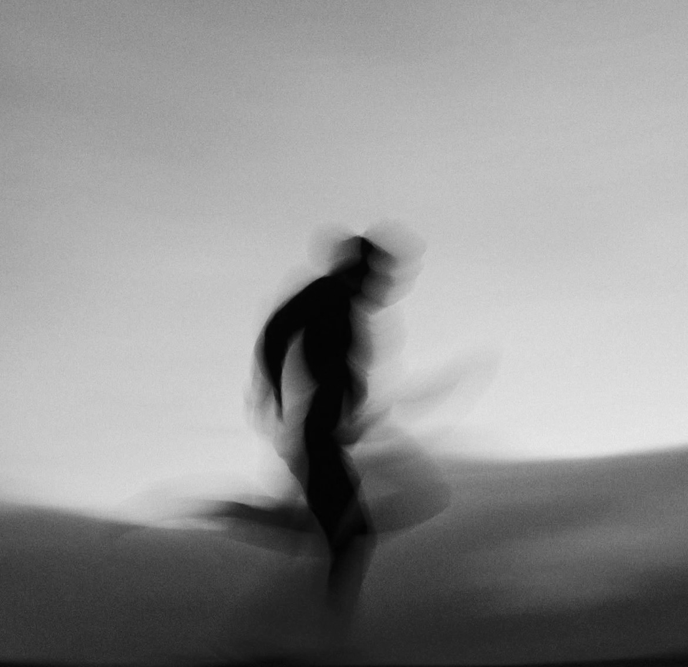

103 Mountain
Prilagojena gorska doživetja za zasebne goste.
Zasebna in premišljeno oblikovana doživetja v gorah, s poudarkom na ujemanju, varnosti in kakovosti dneva kot celote.
Povprašaj o zasebnem gorskem doživetju
Pristop
Prilagojen pristop.
Uspešen dan v gorah se začne veliko pred izhodiščem. Začne se z načrtovanjem, iskrenimi pričakovanji in potjo, ki ustreza fizični pripravljenosti, samozavesti, ambiciji in občutku tega, kar gost v resnici išče.
103 Mountain je namenoma oseben in selektiven. Ni standardna vodniška ponudba, zgrajena okoli generičnih itinerarjev.
Varnost je na prvem mestu. Dosežka ne postavljam pred dobro presojo, gostje pa morajo biti pripravljeni spoštovati odločitve, povezane s terenom, tempom, spremembami poti in razmerami.
Kaj ponujam
Doživetja, oblikovana okoli ujemanja.
- Zasebna gorska doživetja za posameznike in manjše skupine
- Izbor poti glede na realne sposobnosti, ambicije in razmere
- Skrbno načrtovanje pred začetkom dneva
- Pristop, ki temelji na varnosti in presoji
- Bolj oseben in pozoren vodniški format
- Doživetja, oblikovana okoli tempa in kakovosti, ne količine

Kako vodim
Pozornost, mirnost in odgovornost.
Cilj ni ljudi potisniti skozi generično izkušnjo, ampak ustvariti dan v gorah, ki je smiseln od začetka do konca.
To običajno pomeni dobro pripravo, iskreno komunikacijo, stabilen tempo in pripravljenost na prilagoditve, kadar to zahtevajo razmere ali ljudje. Izziv je del izkušnje, vendar mora biti pravi izziv.
Ozadje
Globina v gorah.
- 30 let plezanja, alpinizma in gorništva
- Aktiven v gorah od leta 1995
- Inštruktor alpinizma in športnega plezanja
- Licenciran vodnik pohodništva in gorništva
Za zasebne goste, ki želijo gorsko doživetje, oblikovano z ujemanjem, presojo in bolj osebnim standardom skrbi.
Povprašaj o zasebnem gorskem doživetju